CASO DE ESTUDIO UX/UI
UX/UI CASE STUDY
Telecom — Flow, Argentina
Diseño del cliente web de Flow: ver TV en vivo, guía de programación y contenido on demand desde cualquier computadora, sin instalar nada.
Design of the Flow web client: watch live TV, browse the programming guide, and stream on-demand content from any computer, without installing anything.
Rol
Role
UX/UI Designer
Duración
Duration
6 meses
6 months
Herramientas
Tools
Adobe XD
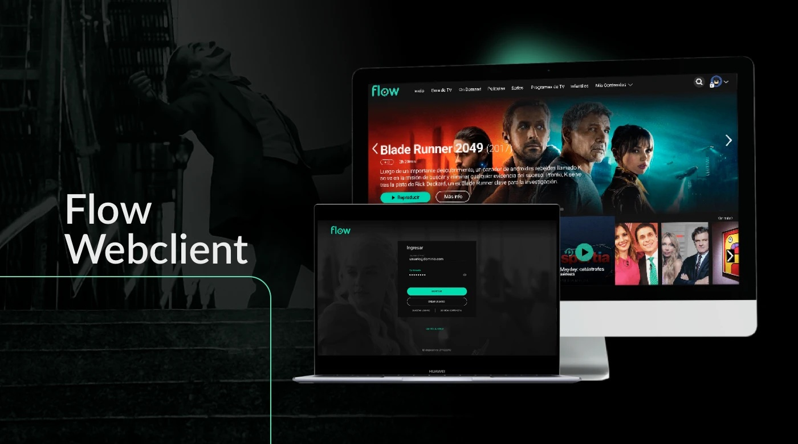
CONTEXTO
CONTEXT
Las personas usuarias pueden acceder desde cualquier computadora sin necesidad de instalar ningún archivo, y disfrutar de sus series o películas favoritas directamente desde el navegador.
People can access it from any computer without installing a single file, and enjoy their favorite shows and movies directly from the browser.
Teniendo en claro estos principios:
With these principles in mind:
DISCOVERY
Comenzamos con una entrevista y una encuesta para obtener información de las personas usuarias. De acuerdo con nuestras hipótesis, quienes utilizaban algún tipo de reproductor en web estaban acostumbrados a tener un menú horizontal en la parte superior que agilizara la navegación.
We started with an interview and a survey to gather information from users. According to our hypotheses, people who used some kind of web player were used to having a horizontal menu at the top that sped up navigation.
También surgieron nuevas funcionalidades a resolver: acceso a los canales anteriores, posibilidad de ver la grilla sin que tape el contenido, distintos perfiles y un mini reproductor.
New features to address also emerged: access to previously watched channels, the ability to view the guide without it covering the content, multiple profiles, and a mini player.
VALIDACIÓN
VALIDATION
Hicimos pruebas de usabilidad con 6 personas usuarias —tamaño de muestra habitual en tests de usabilidad, ya que a partir de la quinta o sexta persona los patrones de comportamiento empiezan a repetirse—. Con mapas de calor identificamos, entre el grupo, estos hallazgos:
We ran usability tests with 6 users — a typical sample size for usability testing, since behavior patterns tend to start repeating from the fifth or sixth person onward. Using heatmaps, we identified these findings across the group:
Parte del grupo utilizó el ícono de mostrar la contraseña, en especial cuando el navegador guardaba una contraseña desactualizada.
Part of the group used the show-password icon, especially when the browser had an outdated saved password.
El mapa de calor mostró mayor concentración de clicks en el espacio de los CTA donde se muestra el texto, específicamente sobre el copy "Ingresar".
The heatmap showed a higher concentration of clicks on the text area of the CTAs, specifically on the "Ingresar" (Sign in) copy.
Buena parte del grupo prefirió volver a guiarse con el elemento del menú "Guía de TV" antes que con el botón "Ocultar Guía".
Most of the group preferred to navigate back using the "Guía de TV" (TV Guide) menu item rather than the "Ocultar Guía" (Hide Guide) button.
Una parte del grupo esperaba que el logo de Flow los devolviera a un estado previo, o lo usó para recargar la página de inicio.
Some of the group expected the Flow logo to take them back to a previous state, or used it to reload the home page.
Mapas de calor
Heatmaps
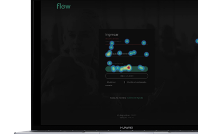
Login — clicks concentrados en el CTA "Ingresar" y en el ícono de mostrar contraseña.
Login — clicks concentrated on the "Ingresar" (Sign in) CTA and the show-password icon.
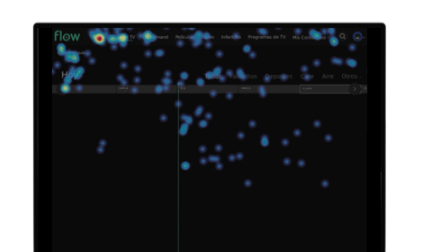
Navegación superior — concentración de clicks en el logo y en "Guía de TV".
Top navigation — clicks concentrated on the logo and on "Guía de TV" (TV Guide).
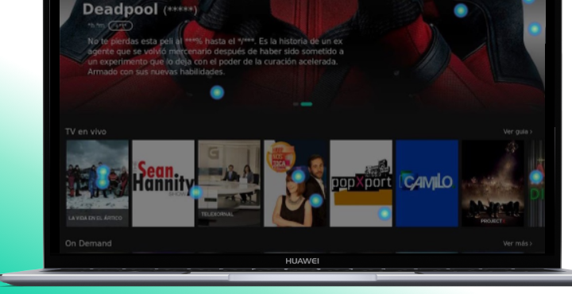
Banner destacado — clicks distribuidos entre el CTA principal y los thumbnails de TV en vivo.
Featured banner — clicks distributed between the main CTA and the live TV thumbnails.
ARQUITECTURA DE INFORMACIÓN
INFORMATION ARCHITECTURE
De acuerdo con los datos obtenidos, encontramos puntos débiles que necesitaban una atención especial. Optimizamos la arquitectura de información para ayudar a los usuarios a navegar y encontrar lo que necesitan.
Based on the data we gathered, we found weak points that needed special attention. We optimized the information architecture to help users navigate and find what they need.
Al representar todo el proceso pudimos identificar cómo navega el usuario y si eso satisface sus necesidades. Crear el flujo de usuario nos ayudó a dejar un camino claro para que logre su objetivo.
By mapping out the entire process, we were able to identify how users navigate and whether that met their needs. Building the user flow helped us leave a clear path for them to reach their goal.
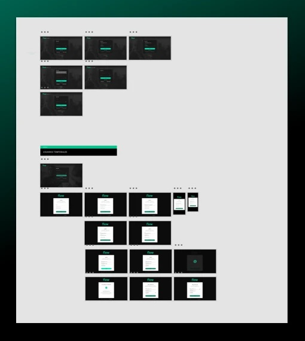
SISTEMA DE DISEÑO
DESIGN SYSTEM
El principal beneficio de un sistema de diseño es ahorrar tiempo en las iteraciones y los cambios mediante el uso de componentes prefabricados, manteniendo la consistencia del conjunto del producto. Siempre creamos los conceptos básicos de un producto en el sistema de diseño y luego los completamos paso a paso en las pantallas.
The main benefit of a design system is saving time on iterations and changes by using prebuilt components, while keeping the whole product consistent. We always build the basic concepts of a product in the design system first, then complete them step by step on the actual screens.
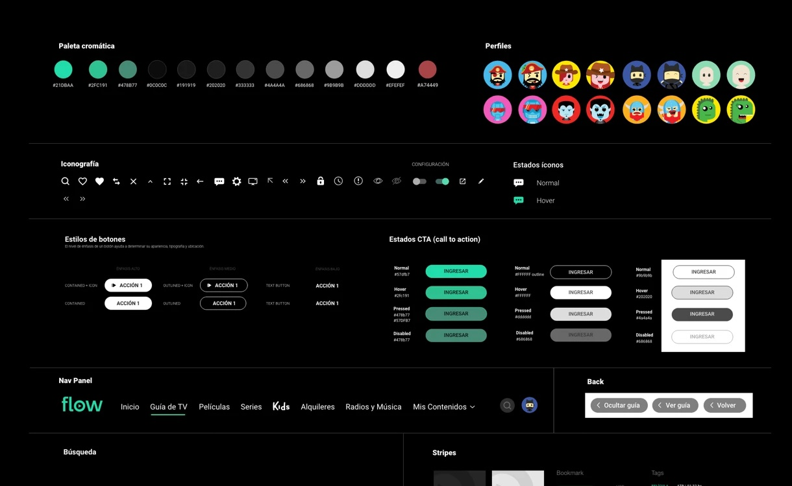
Fundamentos: paleta cromática, perfiles, iconografía y estilos de botones.
Foundations: color palette, profiles, iconography, and button styles.
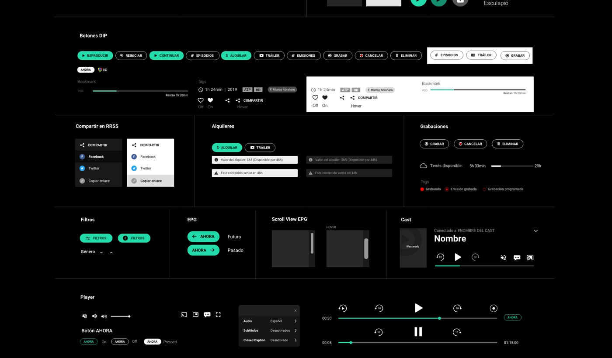
Componentes de producto: botones DIP, compartir en RRSS, alquileres, grabaciones, filtros, EPG, cast y reproductor.
Product components: PIP buttons, social sharing, rentals, recordings, filters, EPG, cast, and the player.
LA INTERFAZ PARA LA PERSONA USUARIA
THE INTERFACE FOR THE USER
La clave principal para diseñar la interfaz fue la consistencia, manteniéndola simple, mínima y sencilla de utilizar.
The main key to designing the interface was consistency, keeping it simple, minimal, and easy to use.
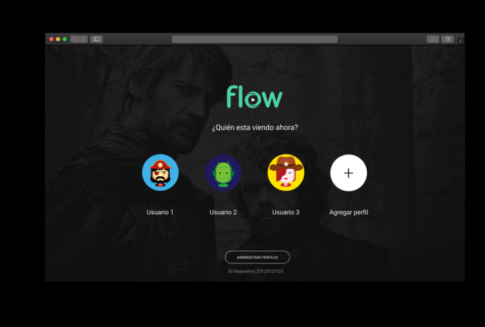
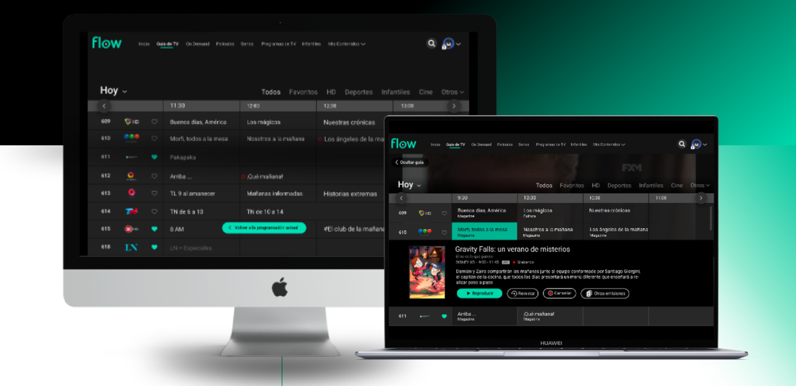
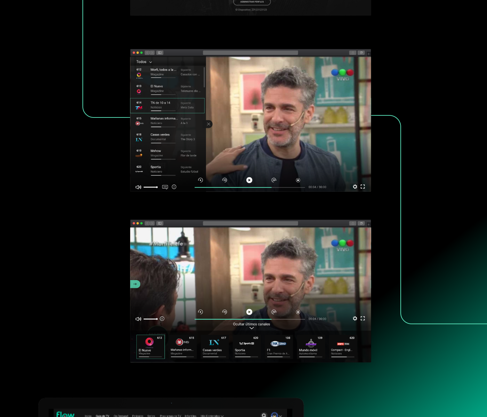
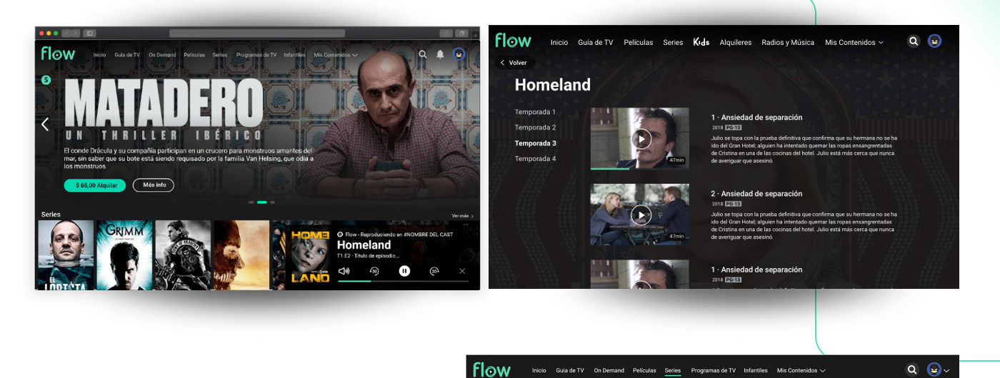
¿QUÉ APRENDÍ DE ESTE PROYECTO?
WHAT DID I LEARN FROM THIS PROJECT?
Uno de los primeros trabajos 100% in-house, con un equipo que se estaba armando, poniendo foco en el producto y con un objetivo bien claro como propósito: tener un MVP en 6 meses que nos permitiera lanzar con la menor cantidad de características posibles, para aprender y extraer información relevante de ese período de prueba —a través de una serie de métricas de interacción— y luego actuar en base a esos datos.
One of the first 100% in-house projects, with a team that was still being formed, focused on the product and with a clear purpose in mind: to have an MVP within 6 months that would let us launch with the smallest possible feature set, learn and extract relevant information from that trial period — through a set of interaction metrics — and then act on that data.